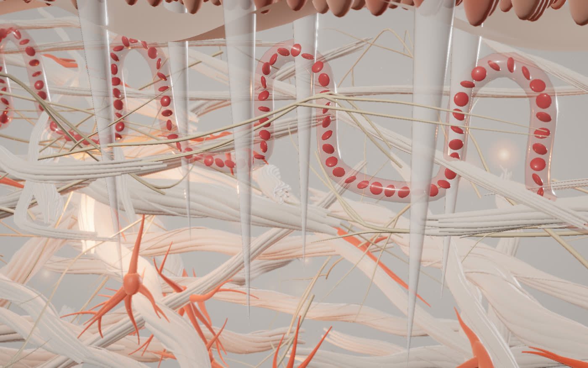
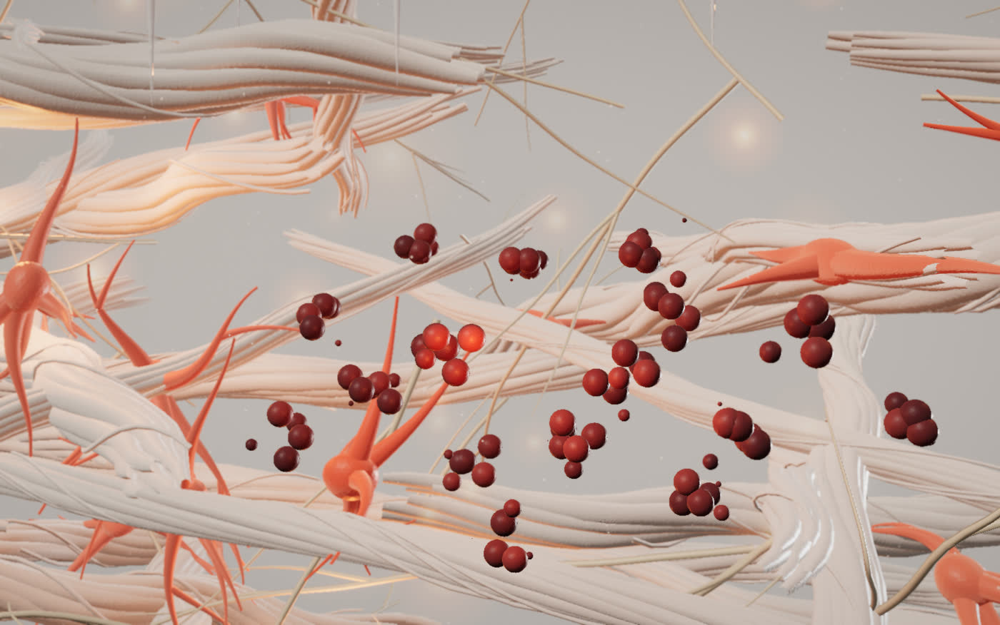
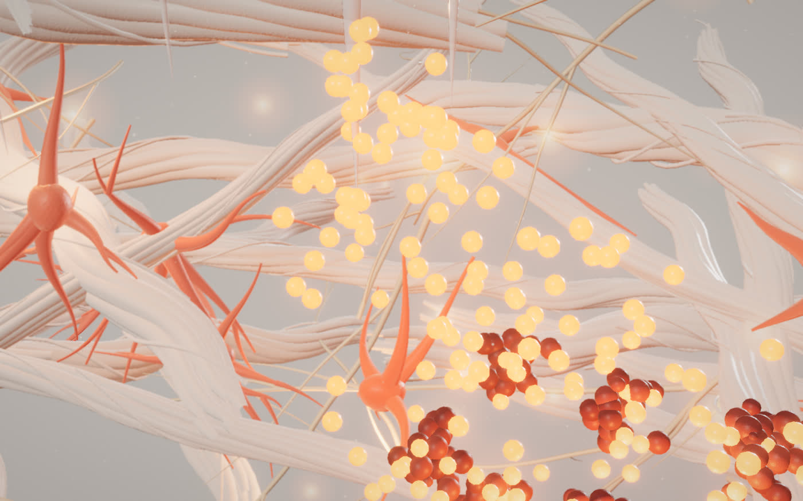

Case study A
A patch that sees an infection coming
Concept study by Limen · 2026
A short 3D explainer for a wearable biosensor: the patch sits on the skin, reads the fluid between cells and flags the chemical signs of an infection before the wearer feels unwell.
Built to show an investor or a clinician the mechanism in under thirty seconds, without a single line of jargon.
The tissue is drawn to anatomy rather than decoration: collagen bundles made of fibrils, thin elastic fibres, fibroblasts, dendritic cells, capillary loops and clusters of cocci where the infection starts.
Sizes are stylised so everything can be seen. Illustrative concept by Limen, not a real product, device or clinical data.
- Science
- Interstitial fluid sensing, dermal anatomy
- Audience
- Investors and clinicians
- What we made
- Real-time 3D in code, for web and film
- Length
- About 30 seconds


